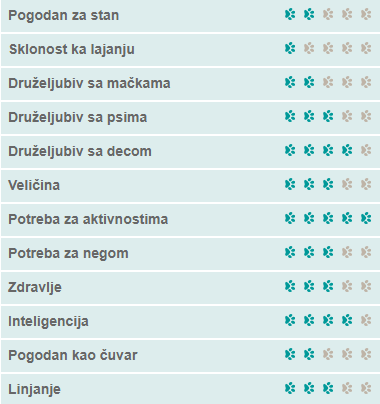
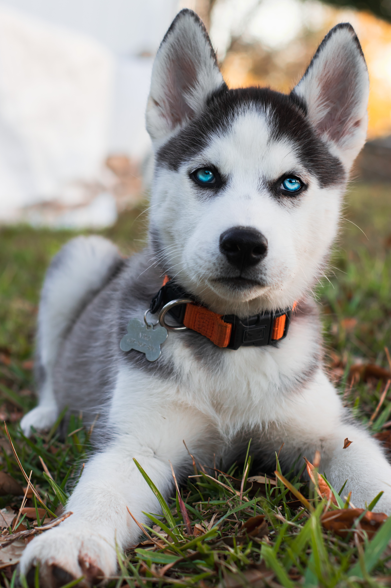
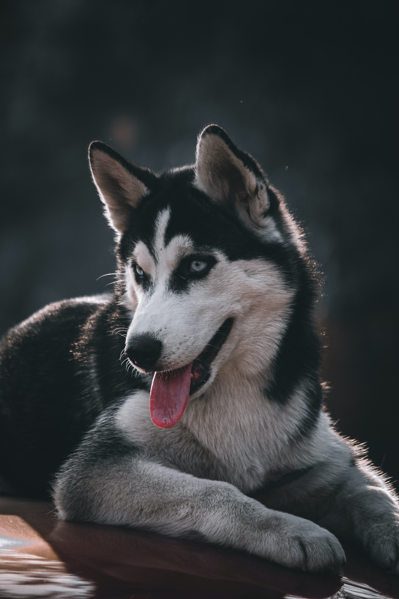
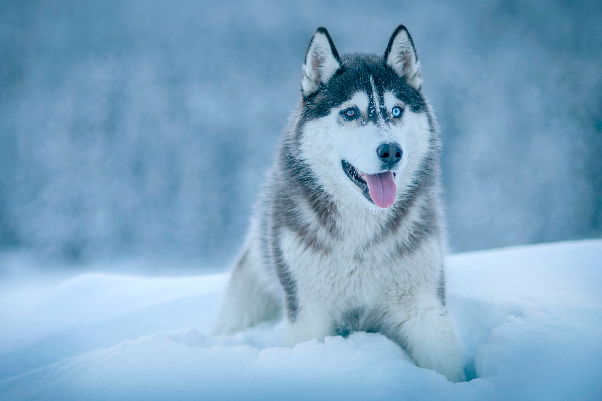

Хаски

- Карактеристике
- Интелигентан, самосталан и енергичан пас. Добар је са децом и пријатељски настројен према странцима. Не лаје, само завија. Није пас који може поднети мало пажње.
- Изглед
- Пас средње величине. Има густо и дуго крзно које може бити у разним варијацијама боја, од црно - беле, сиво - беле до црвено - беле. Имају плаве или смеђе очи, а 20 посто их има једно плаво, а друго смеђе око.
- Дресура
- Слушаће само ако осети да је власник јаког карактера и да у њему има “вођу чопора”. Тренинг хаскија захтева стрпљење, упорност и доследност, а нарочито познавање карактера овог пса. Уколико власник није у потпуности стабилан, строг и истрајан, овај пас ће искористити његову слабост и постаће несташан и непослушан.
- Нега
- Нервозни су само кад им је досадно и кад се не крећу довољно, тако да им се морати посветити доста пажње. Веома су активни и потребно им је доста простора и шетње, првенствено истрчавање. Чист је, није га потребно купати, крзно му нема сопствени мирис. Лиња се два пута годишње.
- Здравље
- Од здравствених проблема могу се јавити: дисплазија кукова, измештање мокраћне цеви, проблеми са очима као што је катаракта и оштећење рожњаче које може да изазове слепило.
- Животни век
- У просеку 12-15 година.



Кликните за почетну страницу
Ако вам се свидео баш овакав пас, можете погледати огласе за његову продају кликом на овај текст.